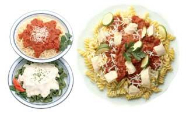
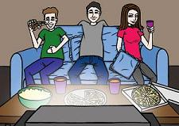

 Italians are known for their passion and love of food. Eating well is an important part of the Italian culture. This view is shared by many others around the world who enjoy and have adopted the Italian cuisine.
Traditionally il pranzo was the time when the family ate a substantial meal together. It usually consists of a pasta or soup dish followed by a main course.
There were several reasons for this:
Nowadays this way of life is changing, especially in the larger cities. Increasingly the modern day lifestyle is shifting towards:
These factors are all threatening the existence of the traditional Italian extended lunch break.
Furthermore, the spread of fast food outlets and their popularity with children and teenagers are also affecting il pranzo mitico italiano.
The following article looks at some of the changes taking place in the way of life of Italian society.
L'Italia che cambia – L'alimentazione modernaOggi la società non dà tempo al cibo. Il cambiamento radicale dello stile di vita delle famiglie ha cambiato anche il modo di mangiare. La casa non è più l'unico luogo dove si mangia. Il ruolo delle donneOggi molte donne lavorano. Di consequenza i ragazzi piccoli mangiano nelle mense scolastiche e quelli grandi mangiano a casa da soli o nei fast-food con gli amici. I giovani sono attirati dal fuori pasto (patatine, snack al cioccolato, pizzette …). Nel fuori pasto c'è il fascino di stare insieme con gli amici ed anche di fare scelte diverse da quelle della famiglia. |
|
Cosa piace mangiare agli adolescenti?Cibi confezionati da mangiare in piedi e con le mani (patatine fritte, snack al cioccolato, cips e pizza, coca-cola®, gelati, panini, paste). Quando? |
Cosa e quando non mangiano gli adolescenti?Cosa? Quando? |
Lo stile alimentare degli adolescentiOggi c'è uno stile alimentare peculiare agli adolescenti. Tutto si deve assimilare al comportamento del gruppo – vestiti, zaini, musica! Oggi anche il cibo entra in questa categoria! Nelle città grandi questi aspetti sono più ovvi che nelle cittadine piccole. Però anche qui comincia una protesta verso le abitudini alimentari tradizionali. Allarme!! La cucina italiana è famosa in tutto il mondo. Perdere questa ricchezza è un rischio che gli italiani non vogliono correre. |
|